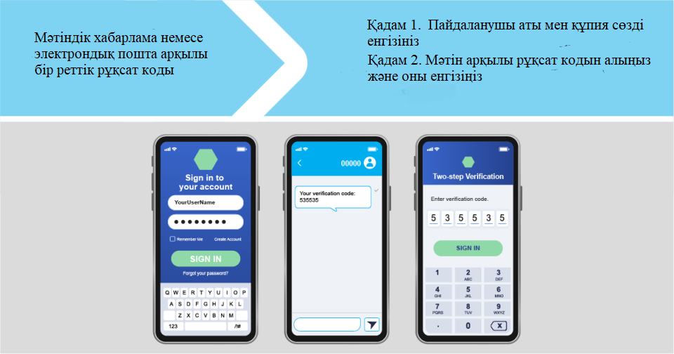
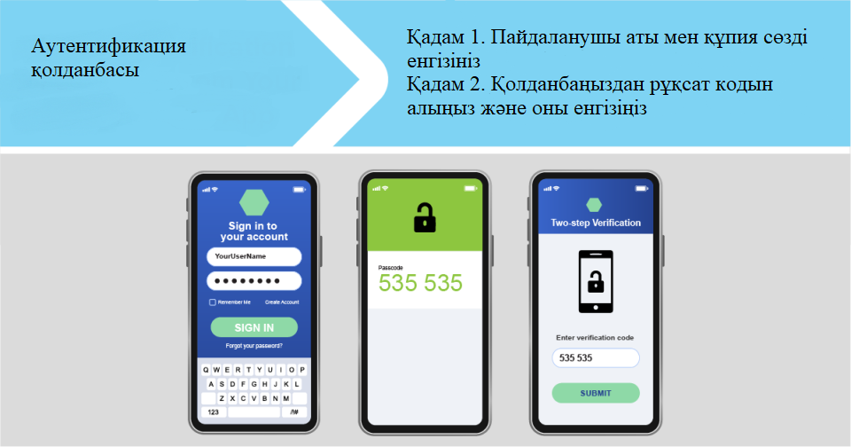
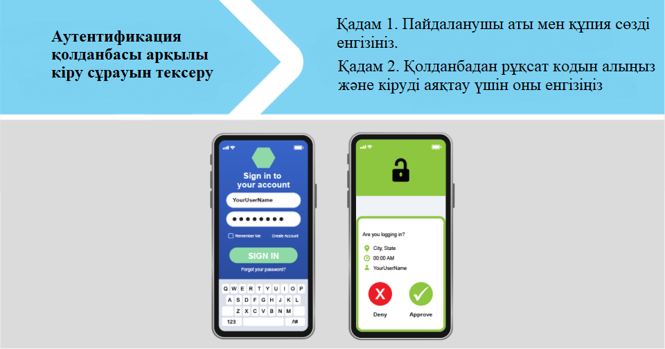
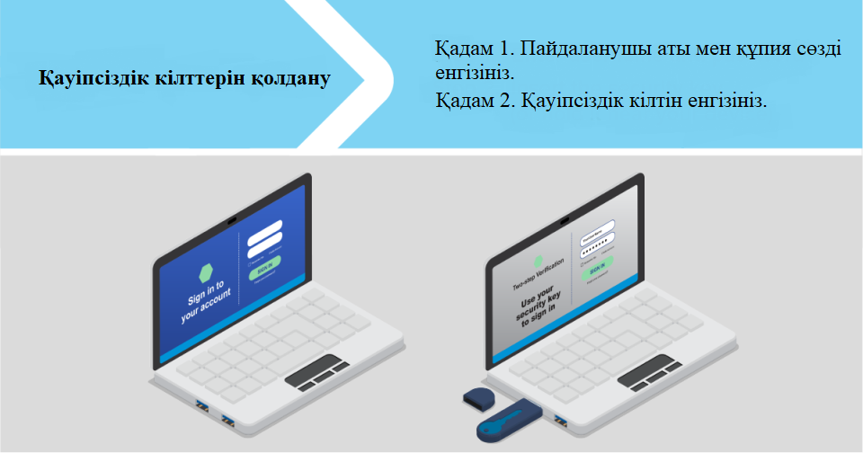
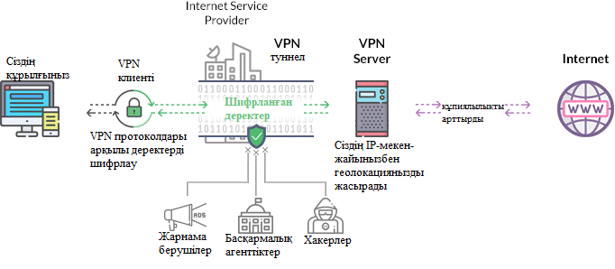

Жеке ақпарат пен деректерді қорғау
Интернет ақпараттық супермагистраль деп аталды. Бірақ алаяқтар, хакерлер және басқа да зұлым адамдар сіздің жеке ақпаратыңызды желіде ұрлауға тырысқанда, құрылғыларды, желіні және ақпаратты қалай құлыптау керектігін білу жақсы идея. Осылайша, сіздің парольдеріңіз, әлеуметтік сақтандыру нөміріңіз немесе шот нөмірлеріңіз супермагистраль бойымен алаяқтарға жылдам өтпейді.
Өз құрылғыларынызды қорғаныз
Қауіпсіздік бағдарламалық құралын, интернет браузерін және операциялық жүйені жаңартып отырыңыз.
Қылмыскерлер бағдарламалық жасақтама компаниялары оларды түзетпес бұрын пайдалану үшін әлсіз жақтарды іздейді. Бірақ бағдарламалық құралды жүйелі түрде жаңартып отыру — жаңа нұсқасы шыққаннан кейін мүмкіндігінше тезірек — маңызды патчтар мен қауіпсіздік қорғанысының бар екеніне көз жеткізуге көмектеседі.
Қауіпсіздік бағдарламалық құралын, амалдық жүйені, интернет браузерлерін және қолданбаларды жаңарту жолы туралы ақпарат алу үшін әзірлеушінің веб-сайтына кіріңіз. Олар әдетте электрондық пошта жаңартуларына жазылу немесе оларды автоматты түрде жаңарту үшін орнату әдісіне ие. Жаңарту туралы еске салғыштарды елемеңіз. Ақпаратыңызды алу үшін хакерлерге есікті ашық қалдырғыңыз келмейді.
Міндетті түрде жаңартыңыз
- Қауіпсіздік бағдарламалық құралы. Вирусқа қарсы бағдарламалар немесе брандмауэрлер алдын ала орнатылған болса да, құрылғыға жүктеп алсаңыз да, жұмыс істеу үшін жаңартылған болуы керек.
- Операциялық жүйенің бағдарламалық құралы. Мысалы, бұл Windows, Apple OS немесе Chrome болуы мүмкін.
- Интернет браузерлері мен қолданбалары. Әзірлеушілер қауіпсіздік мәселелерін шешу, қателерді түзету немесе жаңа мүмкіндіктерді қосу үшін жиі жаңартуларды ұсынады.
Компьютер мен ұялы телефонды қорғау
Ұялы телефоныңыз ең құпия жеке ақпаратыңызды сақтайды. Құпия сөздер мен тіркелгі нөмірлері, электрондық пошталар, мәтіндік хабарлар, фотосуреттер және бейнелер сияқты нәрселер. Телефоныңыз дұрыс емес адамдардың қолына түссе, біреу сіздің жеке басыңызды ұрлауы, ақшаңызға зат сатып алуы немесе электрондық поштаңызды немесе әлеуметтік медиа аккаунттарыңызды бұзуы мүмкін. Міне, телефонды қалай қорғау керек.
1. Телефоныңызды құлыптаңыз
2. Бағдарламалық құралды жаңартыңыз
3. Деректердің сақтық көшірмесін жасаңыз
4. Жоғалған телефонды табуға көмек алыңыз
1. Телефоныңызды құлыптаңыз
Телефонды пайдаланбаған кезде құлыпталатын етіп орнатыңыз және оның құлпын ашу үшін PIN немесе рұқсат кодын жасаңыз. Кемінде 6 саннан тұратын рұқсат кодын пайдаланыңыз. Сондай-ақ телефон құлпын саусақ ізімен, көз торымен немесе бетіңізбен ашуға болады.
Apple қолдауы: iPhone, iPad немесе iPod touch
құрылғысымен рұқсат кодын пайдаланыңыз
Android анықтамасы: Android
құрылғысында экран құлпын орнату
2. Бағдарламалық құралды жаңартыңыз
Амалдық жүйеңіздің жаңартулары жиі маңызды патчтарды және қауіпсіздік қауіптерінен қорғауды қамтиды. Телефонды автоматты түрде жаңартылатын етіп реттеңіз. Әйтпесе, жаңартуларды қадағалаңыз және оларды іске қосуды кешіктірмеңіз. Қолданбаларыңызды да жаңартыңыз.
Apple қолдауы: iPhone, iPad немесе
iPod touch құрылғысын жаңартыңыз
Android анықтамасы: Android құрылғысында
экран құлпын орнату
3. Деректердің сақтық көшірмесін жасаңыз
Телефондағы деректердің сақтық көшірмесін үнемі бұлтқа немесе компьютерге жасаңыз. Осылайша, телефоныңызды жоғалтып алсаңыз, жеке ақпаратыңызға қол жеткізе аласыз.
Apple қолдауы: iPhone, iPad және iPod touch
құрылғыларының сақтық көшірмесін
қалай жасауға болады
Android анықтамасы: Android құрылғысындағы
деректердің сақтық көшірмесін жасаңыз
немесе қалпына келтіріңіз
4. Жоғалған телефонды табуға көмек алыңыз
Мобильді операциялық жүйелерде телефонды жоғалтқан жағдайда табуға немесе біреу ұрлады деп ойласаңыз, оны құлыптауға немесе өшіруге көмектесетін бағдарлама бар. Параметрлеріңізге өтіп, осы мүмкіндікті қосыңыз.
Apple қолдауы: iPhone, iPad, iPod touch немесе
Mac құрылғыларында Find My қолданбасын
орнату
Android анықтамасы: жоғалған Android
құрылғысын табуға дайын болыңыз
Құпия сөзді тексеру
Құпия сөздер - сіздің есептік жазбаңыздың есіктеріндегі құлыптар. Электрондық пошта, банк шоты және салық декларациялары сияқты көптеген жеке ақпаратты онлайн тіркелгілеріңізде сақтайсыз, сондықтан сізге жақсы қорғау қажет. Құпия сөздеріңіздің қауіпсіз екеніне көз жеткізу үшін мұнда бақылау тізімі берілген.
Құпия сөзді қалай қауіпсіз сақтауға болады?
Құпия сөзіңіз көлемді әрі қауіпсіз екеніне көз жеткізіңіз. Бұл кем дегенде 12 таңбаны білдіреді. Жалпы, құпия сөзді ұзағырақ ету - оны қауіпсіз етудің ең оңай жолы. Құпия сөзді есте сақтауды жеңілдету үшін кездейсоқ сөздерден тұратын құпия фразаны пайдалануды қарастырыңыз, бірақ жалпы сөздерді немесе сөз тіркестерін пайдаланбаңыз. Егер сіз пайдаланып жатқан қызмет ұзақ құпия сөздерге рұқсат бермесе, үлкен және кіші әріптерді, сандарды және таңбаларды араластыру арқылы құпия сөзіңізді күшейте аласыз.
Басқа тіркелгілер үшін пайдаланған құпия сөздерді қайта пайдаланбаңыз. Әртүрлі тіркелгілер үшін әртүрлі құпия сөздерді пайдаланыңыз. Осылайша, егер хакер бір тіркелгі үшін құпия сөзіңізді алса, ол оны басқа тіркелгілеріңізге кіру үшін пайдалана алмайды.
Мүмкіндігінше көп факторлы аутентификацияны пайдаланыңыз. Кейбір тіркелгілер есептік жазбаға кіру үшін құпия сөзден басқа нәрсені талап ету арқылы қосымша қауіпсіздікті қамтамасыз етеді. Бұл көп факторлы аутентификация деп аталады. Тіркелгіңізге кіру үшін қажет «қосымша нәрсе» екі санатқа бөлінеді:
Сізде бар нәрсе, мысалы, аутентификация қолданбасы арқылы алынған құпия сөз немесе қауіпсіздік кілті.
Саусақ ізін, көз торын немесе бетіңізді сканерлеу сияқты бір нәрсе.
Құпия сөз реттеушісін қарастырыңыз. Көптеген адамдар өздерінің барлық құпия сөздерін қадағалауда қиындықтарға тап болады. Құпия сөз неғұрлым ұзақ және күрделі болса, соғұрлым ол қауіпсіз болады, бірақ ұзағырақ құпия сөзді есте сақтау қиынырақ болуы мүмкін. Құпия сөздерді және қауіпсіздік сұрақтарын қауіпсіз құпия сөз реттеушісінде сақтауды қарастырыңыз. Сенімді құпия сөз реттеушісін табу үшін тәуелсіз шолу сайттарын іздеңіз және олар пайдаланатындар туралы достарыңыз бен отбасыңызбен сөйлесіңіз. Құпиясөз менеджеріндегі ақпаратты қорғау үшін күшті құпия сөзді пайдалануды ұмытпаңыз.
Жауаптарын тек өзіңіз білетін құпия сұрақтарды таңдаңыз. Егер сайт сізден қауіпсіздік сұрақтарына жауап беруіңізді сұраса, пошталық индексіңіз, туған жеріңіз немесе анаңыздың қыз тегі сияқты жалпыға қолжетімді немесе желіде оңай табылған жауаптарды бермеңіз. Алғашқы көлігіңіздің түсі сияқты шабуылдаушылар оңай болжай алатын ашық сұрақтарды қолданбаңыз. Сіз тіпті болжауды қиындату үшін мағынасыз жауаптарды пайдалана аласыз, бірақ егер жасасаңыз, не пайдаланып жатқаныңызды есте сақтаңыз.
Бұзушылық болса, құпия сөздерді жылдам өзгертіңіз. Егер компания хакерлер құпия сөзіңізді алған болуы мүмкін деректердің бұзылғаны туралы сізге хабарласа, сол компанияда пайдаланатын құпия сөзді және ұқсас құпия сөзді пайдаланатын кез келген тіркелгіні дереу өзгертіңіз.
Екі факторлы аутентификация
Сіз кем дегенде бір есептік жазбаға кірмейсіз бір күн өтпейтін шығар - бәлкім, сіз электрондық поштаңызды тексеріп, әлеуметтік желілерде хабарламалар жариялап, шоттарды төлеп, достарыңыз бен отбасыңызға ақша жіберіп жатқан боларсыз немесе интернеттен бірдеңе сатып алып жатқан боларсыз. Есептік жазбаларыңызда көптеген жеке және қаржылық ақпарат болуы мүмкін. Сондықтан сіз оларды құпия сөзбен қорғайсыз. Өкінішке орай, құпия сөздер кибершабуылдарға осал. Бірақ тіркелгілеріңізді қауіпсіз етудің оңай жолы бар: екі факторлы аутентификацияны қосыңыз.
Неліктен бір құпия сөз жеткіліксіз?
- Хакерлер тіркелгі деректеріңізді ашу үшін сізді алдау үшін фишингтік шабуылдарды пайдаланады.
- Алаяқтар бұзылған тіркелгіге кіру үшін пайдаланушы аты мен құпия сөзді пайдалану арқылы деректердің бұзылуы кезінде ұрланған тіркелгі деректерін сатып алады. (Сондықтан ақпаратыңыз бұзған болуы мүмкін екенін байқасаңыз, құпия сөзді дереу өзгерту маңызды.)
- Хакерлер басқа тіркелгіңізге кіру үшін пайдаланушы атыңыз бен құпия сөзіңізді де пайдалануға тырысуы мүмкін. Бұл бір пайдаланушы аты мен құпия сөзді бірнеше жерде пайдаланған жағдайда ғана жұмыс істейді - бұл бір пайдаланушы аты мен құпия сөзді ешқашан қайта қолданбаудың себебі.
- Егер хакерлерде тек сіздің пайдаланушы атыңыз болса, олар сіздің құпия сөзіңізді табу үшін бағдарламалық құралды пайдалана алады. Егер сайтта шабуылдың осы түрін анықтау үшін қорғаныс құралдары болмаса, хакерлер бағдарламалық құралы әртүрлі құпия сөздерді қолданып көруі мүмкін.
Тіркелгілеріңізді қорғау
Тіркелгілеріңізге рұқсатсыз кіруді болдырмау үшін сайттар әдетте пайдаланушы аты мен құпия сөзбен кіруді талап етеді. Бұл процесс сіздің кім екеніңізді тексереді және аутентификация деп аталады. Жүйеге кіру үшін беретін тіркелгі деректері – осы мысалдағы құпия сөзіңіз – аутентификация факторының түрі болып табылады. Аутентификация факторлары үш санатқа бөлінеді:
Құпия сөз, PIN код немесе қауіпсіздік сұрағына жауап сияқты сіз білетін нәрсе.
Сізде бар нәрсе, мысалы, SMS, электрондық пошта немесе аутентификация қолданбасынан алынған бір реттік растау құпия сөзі; немесе қауіпсіздік кілті.
Саусақ ізі, бетіңіз немесе көз торы сияқты сіз өзіңіз болатын нәрсе.
Екі факторлы аутентификациясы бар тіркелгілер жүйеге кіру үшін тіркелгі деректерінің үш санатының екеуін талап етеді.
Аутентификацияның ең көп тараған әдістері
Көбірек сайттар мен қолданбалар екі факторлы аутентификацияны ұсынады. Кейбіреулер қандай аутентификация әдісін қолдану керектігін таңдауға мүмкіндік береді. Басқалары сізге бір ғана нұсқа береді. Бұл аутентификацияның ең кең таралған әдістерінің бірі.
1. Мәтіндік хабарлама немесе электрондық пошта арқылы бір реттік рұқсат коды
Аутентификацияның бұл түрімен сіз мәтіндік хабарлама немесе электрондық пошта арқылы растау рұқсат кодын аласыз. Ол әдетте алты саннан тұрады, бірақ ұзағырақ болуы мүмкін. Бұл тек бір рет кіру үшін жақсы және автоматты түрде аяқталады.
Мәтіндік хабарлама арқылы рұқсат кодын алу – мәтіндік хабарларды ала алатын телефонды ғана қажет ететін аутентификацияның кең таралған және қарапайым әдісі. Бірақ оның кемшіліктері бар. Хакерлер SIM картасын ауыстыру шабуылы арқылы телефон нөміріңізді басып алып , нөміріңізді біреу ұрлағанын білмей тұрып, сіздің нөміріңізге, соның ішінде растау коды бар мәтіндік хабарларды ала алады.

Электрондық пошта арқылы растау рұқсат кодын алсаңыз, электрондық пошта тіркелгіңізде күшті құпия сөзді және екі факторлы аутентификацияны пайдаланыңыз. Бұл біреудің электрондық поштаңызды бұзып, бір реттік рұқсат кодыңызды ұрлауын қиындатады.
2. Аутентификация қолданбасы
Кейбір есептік жазбалар жүйеге кіруге тырысып жатқаныңызды растау үшін телефонда немесе планшетте аутентификация қолданбасын пайдалануға мүмкіндік береді. Google Authenticator, Microsoft Authenticator және Duo сияқты бірнеше аутентификация қолданбалары бар.
Authenticator қолданбалары әдетте мәтіндік хабар немесе электрондық пошта арқылы алуға болатын растау рұқсат кодын жасайды. Бірақ қолданбаны пайдалану қауіпсіз, себебі рұқсат коды SIM картасын ауыстыру шабуылына немесе электрондық поштаңызды бұзатын біреуге сезімтал емес .

Аутентификация қолданбасы, сондай-ақ, біреу тіркелгіңізге кіруге әрекеттенген сайын телефоныңызға немесе планшетіңізге push хабарландыруын алу мүмкіндігін бере алады. Хабарландыру сізге кіру әрекеті туралы кейбір мәліметтерді бере алады, мысалы, біреу кіруге тырысып жатқан тіркелгі, оның физикалық орны, олар пайдаланып жатқан құрылғы түрі және кіру әрекетінің күні мен уақыты. Сұрауды түрту арқылы мақұлдауға немесе бас тартуға болады.

3. Қауіпсіздік кілті
Қауіпсіздік кілттері - сіз екінші аутентификация факторы ретінде пайдаланатын физикалық құрылғылар. Олар әртүрлі пішіндер мен өлшемдерде келеді. Сіз оны жеке пайдалану үшін сатып ала аласыз немесе оны жұмыс берушіден аласыз.Қауіпсіздік кілттері кілттің тіркелгіңізбен байланыстырылғанын растау үшін шифрлауды пайдаланады. Кейбіреулері USB портына қосылады. Басқалары құрылғыны жақын ұстаған кезде оған қосылу үшін жақын өріс байланысын (NFC) пайдаланады. Қауіпсіздік кілттері екі факторлы аутентификацияның ең күшті әдісі болып табылады, себебі олар хакерлер ұрлай алатын тіркелгі деректерін пайдаланбайды.

Көбірек сайттар мен қолданбалар екі факторлы аутентификацияны ұсынып жатыр, бірақ ол әдетте әдепкі бойынша қосылмайды. Оны қосу үшін тіркелгі параметрлеріне өтіп, екі факторлы аутентификацияны, екі сатылы растауды немесе көп факторлы аутентификацияны іздеңіз және қадамдарды орындаңыз.Банк, несие карталары, электрондық пошта, әлеуметтік медиа, салық декларациясы веб-сайты және төлем қолданбалары сияқты ең маңызды есептік жазбалардан бастаңыз. Содан кейін оны сіз сатып алатын сайттар сияқты басқа тіркелгілерге қосыңыз.Екі факторлы аутентификацияны орнатқаннан кейін жүйеге кіру үшін пайдаланып жатқан құрылғыны есте сақтау опциясы болуы мүмкін. Егер солай жасасаңыз, жүйеге кірген сайын екінші тіркелгі деректерін берудің орнына, сізге тек орындау қажет болуы мүмкін. сондықтан белгілі бір жағдайларда, мысалы, басқа құрылғыдан жүйеге кіргенде. Есептік жазба тек өз құрылғыларыңызды есте сақтаңыз. Кітапхана сияқты жалпыға қолжетімді компьютерден кіріп жатсаңыз, құрылғыны есте сақтамаңыз.
Виртуальды жеке желі
Қоғамдық Wi-Fi пайдаланудың қауіпсіз әдісін іздесеңіз, виртуалды жеке желі (VPN) қолданбаларының артықшылықтары мен қауіптері туралы біліңіз.
VPN қолданбалары қалай жұмыс істейді?
VPN қолданбасын пайдаланған кезде, қосылған құрылғыдағы немесе телефондағы белгілі бір деректер, мысалы, шолу журналы немесе сіз пайдаланатын қолданбалардағы деректер VPN қызметін ұсынатын компанияға тиесілі серверлер арқылы жіберіледі. Көптеген VPN қолданбалары телефон мен VPN сервері арасында жіберілген деректерді шифрлайды немесе шифрлайды.
Сондай-ақ, VPN пайдалану сіздің орналасқан жеріңізді қорғауға көмектеседі, себебі сіз кірген сайттар сіз нақты қай жерде емес, сервер орналасқан жерде екеніңізді көрсетеді. VPN желілері басқа компаниялардың сізді қадағалауын қиындату сияқты құпиялылықты қорғауды қамтамасыз етуге уәде бере алады. Бірақ төменде айтылғандай, VPN компаниясының өзі сізді жарнамалық мақсатта бақылай алады.
VPN қолданбасын жүктеп алмас бұрын білу керек нәрселер
VPN қолданбасын пайдаланған кезде, сіз осы қолданбаны әзірлеген компанияға сіз кіретін веб-сайттар және сіз онлайн енгізетін нәрселер, соның ішінде құпия жеке деректер сияқты онлайн әрекеттеріңізді көруге рұқсат бересіз. VPN қалай орнатылғанына байланысты VPN компаниясы банк сайттары сияқты шифрланған сайттарды пайдаланған кезде сіз жіберген ақпаратты оқи алады. Сонымен, VPN қолданбасын ақылмен таңдау үшін зерттеу жүргізіңіз.
VPN қолданбасын жүктеп алмас бұрын, мынаны білу керек және істеу керек:
VPN қолданбасын зерттеңіз. Интернеттен «қарау», «шағым» немесе «алаяқтық» сөздері бар қосымшаның атауын іздеңіз. Қолданбалар дүкені (мысалы, Apple Store немесе Google Play) сияқты жерлерде скриншоттарды, қолданба сипаттамасын, оның мазмұн рейтингін және пайдаланушы пікірлерін қараңыз. Кейбір компаниялар олардың қолданбасы қауіпсіз немесе жақсы құпиялылық қорғанысы бар деп айтуы мүмкін. Бірақ сіз бұл уәделерге өздігінен сене алмайсыз. Не үйренгеніңізді білу үшін өзіңіздің зерттеуіңізді жасаңыз, содан кейін шешім қабылдаңыз.
Қолданба сұрайтын рұқсаттарды қарап шығыңыз. VPN қолданбалары орнату кезінде немесе рұқсатты пайдалану кезінде қолданбалар дүкенінің бетінде сұралған рұқсаттарды көрсетеді. Бұл қолданба құрылғыңызда қандай деректер түрлеріне қол жеткізетінін көрсететін пайдалы ақпарат. VPN қолданбалары жұмыс істеу үшін интернет трафигіңізге кіруді қажет етеді, бірақ кейбір қолданбалар қолданбаға орналасқан жеріңізді көруге немесе телефон нөміріңізді және қоңырауларыңыз туралы ақпаратты алуға рұқсат беру сияқты қосымша құпия рұқсаттарды сұрайды. Қолданбаның мақсатын ескере отырып, рұқсаттың мағынасы бар-жоғын және қолданба әзірлеушісіне сол қатынасқа сенетіндігіңізді қарастырыңыз.
Барлық VPN қолданбалары ақпаратыңызды шифрлай бермейтінін ескеріңіз. Кейбір қолданбалар өздерін VPN деп атайды, бірақ сіз кірген веб-сайттарды немесе желіде терген нәрселерді шифрламайтын протоколдарды пайдаланады. Немесе олар сіз жасайтын нәрсенің бір бөлігін ғана шифрлайды. Белгілі бір қолданба ақпаратыңызды шифрлайтынын білу үшін Интернетте тәуелсіз шолу сайттарын іздеңіз.
VPN қолданбалары әдетте сізді толығымен анонимді етпейтінін ескеріңіз. VPN қолданбасын пайдаланып жатсаңыз, Интернет провайдері (ISP) немесе жалпыға қолжетімді Wi-Fi қызметі сіз кірген веб-сайттарды немесе желіде жариялаған ақпаратты көрмеуі мүмкін. Бірақ сіздің VPN қолданбаңыз мүмкін. Сондай-ақ сіз кіретін веб-сайттар үшін де анонимді болмайсыз. Егер сіз, айталық, электрондық пошта мекенжайы бар пішінді толтырсаңыз, VPN сізді бақылай алады.
VPN қолданбасы ақпаратыңызды басқа компаниялармен бөлісуі мүмкін екенін ескеріңіз.
Көптеген VPN қолданбалары тегін, себебі олар қолданба ішіндегі жарнамаларды сатады немесе ақпарат пен онлайн әрекеттеріңізді басқа компаниялармен бөліседі. Трафигіңізді құпия сақтау үшін VPN қолданбасын пайдалансаңыз, оның жарнама берушілер сияқты басқа компаниялармен ақпаратты бөлісетінін білу үшін VPN қолданбасының шарттарын, шарттарын және құпиялылық саясатын қарап шығыңыз. Ал, егер ол сіздің ақпаратыңызбен бөліссе, оның қандай ақпаратпен бөлісетінін біліңіз.
